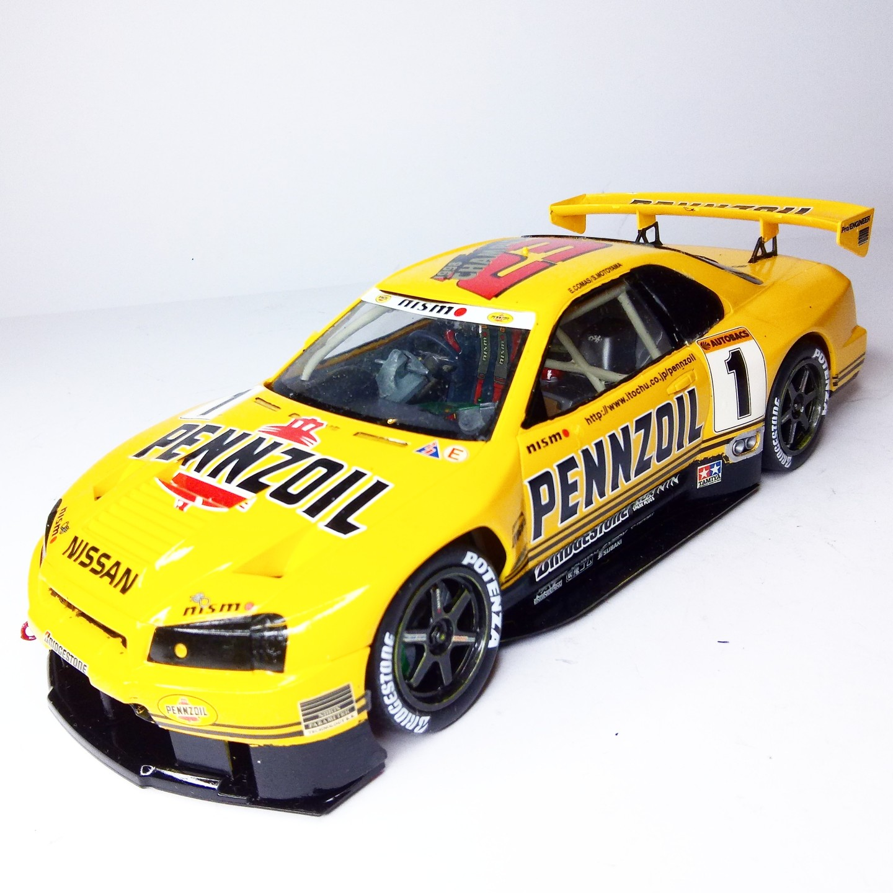
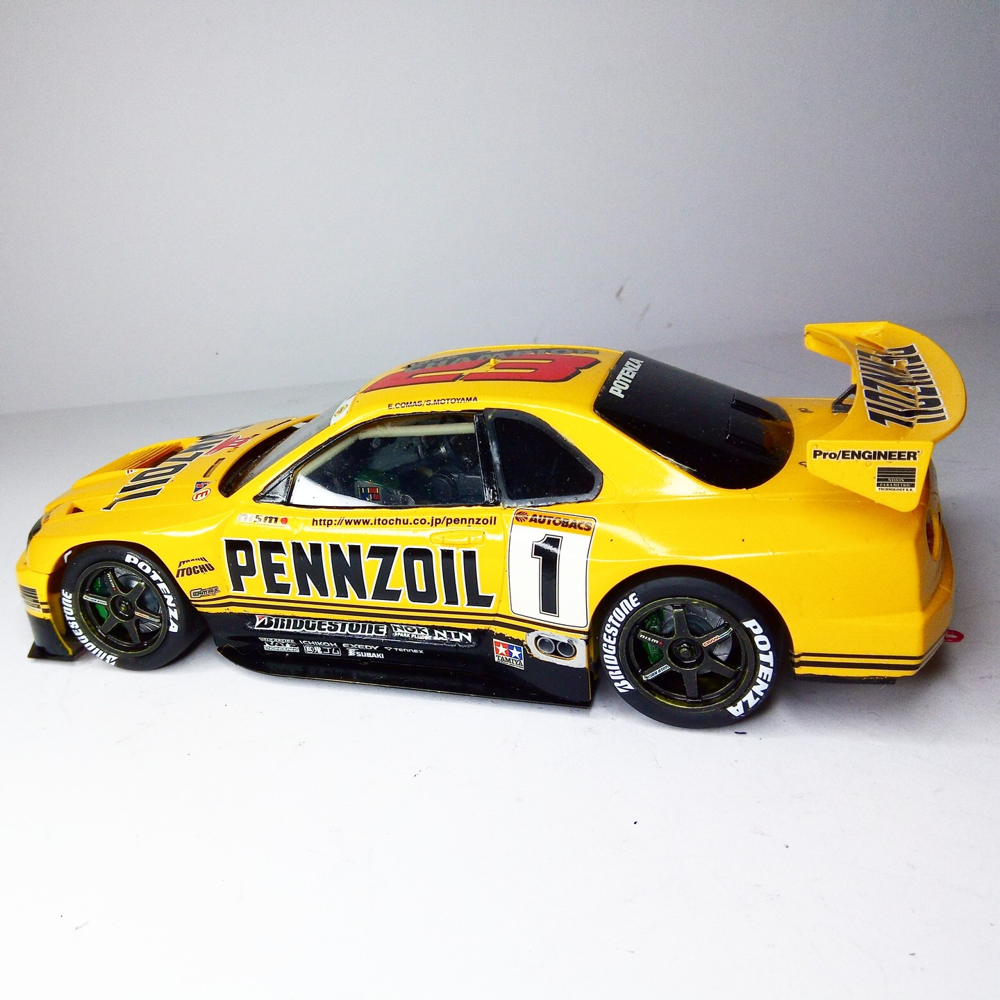

Auto e veicoli stradali · scale model archive
Nissan GT-R
Nissan GT-R — Kit: Tamiya, Scale: 1/24. Interesting car and nice livery More on: https://www.youtube.com/watch?v=gsW39P0bgaM #1/24 #Tamiya #NissanGTR

Photo gallery

English description
Interesting car and nice livery
More on: https://www.youtube.com/watch?v=gsW39P0bgaM
#1/24 #Tamiya #NissanGTR
Descrizione italiana
Auto interessante e bella livrea. Maggiori informazioni: https://www.youtube.com/watch?v=gsW39P0bgaM